I am a designer and illustrator based in the San Francisco Bay Area. I am a problem solver by utilizing empathy to discover people’s needs. I try to learn something new everyday, and I have a passion for UX/UI design, front-end development and illustration.
UX/UI Design
These projects keeps the user in mind and how they would effectively interact within each project. This section showcases my examples in wireframes, visual designs, and front-end development.
VIEW PROJECTSThis section has my examples for traditional print designs including posters, flyers, etc.
VIEW PROJECTS
